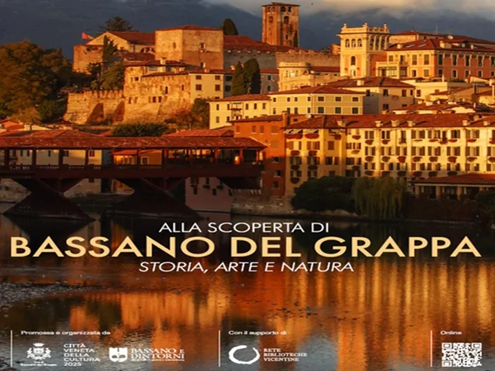

da sab 4 apr a sab 5 dic
Alla scoperta di Bassano del Grappa. Storia, arte e natura
A partire dal 4 aprile e fino ad 5 dicembre 2026 prende avvio “Alla scoperta di Bassano del Grappa. Storia, arte e natura” una visita guidata a cielo aperto che attraversa i luoghi più significativi di Bassano del Grappa come le Piazze della città, il belvedere di Palazzo Sturm…
 Indicazioni
Indicazioni
- Costi e prenotazioni
- Costo non indicato · Prenotazione non indicata
- Programma
- Programma da verificare. Apri la fonte ufficiale per orari e possibili aggiornamenti.
- In caso di maltempo
- Nessuna indicazione specifica pubblicata.
- Note
- Acquisito automaticamente dalla fonte.
L’EVENTO
Descrizione completa
A partire dal 4 aprile e fino ad 5 dicembre 2026 prende avvio “Alla scoperta di Bassano del Grappa. Storia, arte e natura” una visita guidata a cielo aperto che attraversa i luoghi più significativi di Bassano del Grappa come le Piazze della città, il belvedere di Palazzo Sturm, l’iconico Ponte di Palladio, il Camminamento e il Castello degli Ezzelini. Attraverso il percorso didattico, adatto a tutti, sarà possibile conoscere la storia di Bassano del Grappa e le curiosità che si celano dietro a scorci, monumenti e opere d’arte “en plein air”. L’attività, della durata di 120 minuti , è rivolta ad adulti e bambini sopra i sei anni di età. Il tour guidato parte dallo I.A.T. di Bassano del Grappa in Piazza Garibaldi 34 e si svolgerà in lingua italiana. Sempre presso lo sportello I.A.T sarà possibile avere maggiori informazioni sull’attività e le modalità di acquisto online.
IL PROGRAMMA
Programma e orari
Appuntamenti raccolti dalle fonti elencate. Dove manca un orario, non è ancora disponibile in questa scheda.
Programma pubblicato
- 2026-04-04 — 2026-04-04 · 15:00:00
- 2026-04-18 — 2026-04-18 · 15:00:00
- 2026-05-02 — 2026-05-02 · 15:00:00
- 2026-05-16 — 2026-05-16 · 15:00:00
- 2026-05-30 — 2026-05-30 · 16:00:00
- 2026-06-13 — 2026-06-13 · 15:00:00
- 2026-06-27 — 2026-06-27 · 15:00:00
- 2026-09-12 — 2026-09-12 · 15:00:00
- 2026-09-26 — 2026-09-26 · 15:00:00
- 2026-10-10 — 2026-10-10 · 15:00:00
- 2026-10-24 — 2026-10-24 · 15:00:00
- 2026-11-07 — 2026-11-07 · 15:00:00
- 2026-11-21 — 2026-11-21 · 15:00:00
- 2026-12-05 — 2026-12-05 · 15:00:00
INFORMAZIONI UTILI
Prima di partire
- Controllare la fonte prima di partire.
ORGANIZZAZIONE